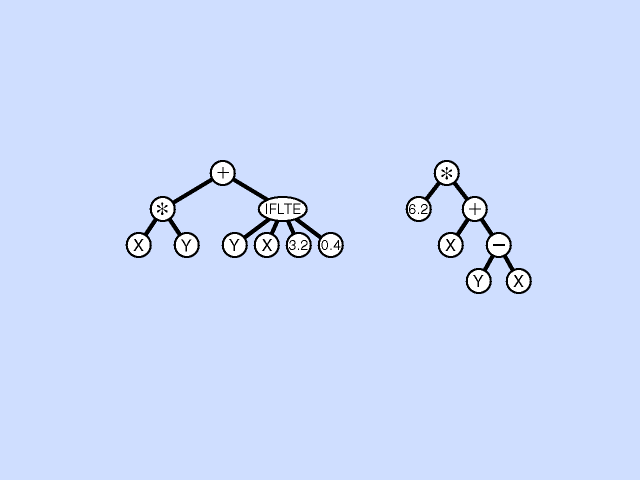

|
|||||||
| [ Home ] | [ Software ] | [ Curriculum ] | [ Hardware ] | [ Community ] | [ News ] | [ Publications ] | [ Search ] |
|
This is an introduction to the Evolutionary Algorithms as used with robotics. This module provides an overview of the genetic algorithm, and genetic programming. When completed, the reader should be ready evolve a robotics controller.
Pyro Module Evolutionary AlgorithmsBefore diving into evolutionary algorithms, let's consider a simple method of problem solving: guess and step. First, just make a guess at a solution and note how close you are to a solution. Next, pick some piece of your guess and consider a slight change. If the variation is worse, don't make the change. If the variation is better, go ahead make the change. Now, continue making slight changes until you get a good enough solution. This guess-and-step methodology is actually called hill climbing due to the following metaphor. Start at a random place on a hill. Pick a direction to step. If the place you would step to is higher than where you are, make the step, otherwise stay where you are. This little algorithm will eventually take you to the top of the hill. However, it might might not take you to the highest place around because you could get trapped on a little plateau (i.e., you would have to step to a lower place before stepping to even higher ground). A slightly better version of hill climbing allows you to take random steps sometimes, regardless of whether or not the step would put you on higher ground. Of course, you don't always want to take random steps (that's called random search), so you'll need to control your randomness. If you only take random steps as dictated by a schedule, then you are using simulated annealing. Simulated annealing allows you to start off taking random steps quite often, but then slowly curb the habit. This works better than hill climbing when the ground is fairly smooth. What could be better than simulated annealing? How about a whole group of people spread over the country side, each as their own simulated annealer? And they can communicate with each other. "Hey, I'm on high ground over here!" or "This area looks promising! Come over here!" This is the idea behind evolutionary algorithms.
Evolutionary AlgorithmsEvolutionary algorithms are techniques for searching through a solution landscape in a generally effective manner. All evolutionary strategies have a core set of properties:
A typical evolutionary system follows this basic algorithm:
MutationMutation is the act of changing one gene in a genome. In the Pyro implementation mutation can take two forms: incremental mutation, or random value mutation. Incremental mutation takes the value of the gene and changes it by +/- a small amount (random() * maxStep. See below for details.). Random value mutation replaces the value by a random value between min and max.
CrossoverCrossover exchanges pieces of two genomes. In Pyro, crossover can be a perfect shuffle, uniform, or point-based. Shuffle simply alternates between each parent. Uniform tosses an even coin to see if the gene comes from the mother or the father. Point-based mutation will only crossover at particular points. Shown here is a single point crossover:
SelectionThose genes with the higher fitness are more likely to survive to the next generation.
VariationsThere are two main flavors of evolutionary systems: the genetic algorithm (GA), and genetic programming (GP). GAs use a fixed genome size composed of bits, or, more generally, floating point numbers. GP uses trees of programming language expressions that can grow and shrink. If using a GA, then the human encoder of the problem assigns a meaning for each number in the gene. In a GP, the human encoder must create the functions and terminals used in the expressions, but the system builds its own representations. We will examine both of these techniques in the following sections.
Genetic AlgorithmFor the first example of a GA, we'll use the pyrobot.brain.ga class. Normally when you create a GA problem using Pyro's classes, you'll subclass the class GA. Let's do a completely artificial problem. Let's evolve a list of integers so as to maximize their sum. To get started, we need three things:
For this problem the fitness function will be the sum() of the numbers. Let's say we want each individual to be represented by a list of length 10. Secondly, let's arbitrarily pick a sum that is large enough; let's say 30. When we get to a sum of 30, we'll stop evolving. Finally, we need a random population to get started. For that, we'll use pyrobot.brain.ga's default initialization, which is part of the constructor for the Gene class. For genes with mode = 'integer', the constructor will create a random string of ones and zeros of the appropriate length. Therefore, such a setup could be written as:
from pyrobot.brain.ga import *
class MaxSumGA(GA):
def fitnessFunction(self, i):
return max(sum(self.pop.individuals[i].genotype), 0)
def isDone(self):
return self.pop.bestMember.fitness > 30
ga = MaxSumGA(Population(15, Gene, size=10, mode='integer',
verbose=1, elitePercent = .1),
mutationRate=0.1, crossoverRate=0.5, verbose=1,
maxGeneration=50)
ga.evolve()
[
This might run for a while, ending with something like:
------------------------------------------------------------ Initial population Fitness: Total 69.00 Best 8.00 Average 4.60 Worst 3.00 Elite fitness: [8.0] ------------------------------------------------------------ Generation 1 Fitness: Total 83.00 Best 8.00 Average 5.53 Worst 1.00 Elite fitness: [8.0] ------------------------------------------------------------ ... ------------------------------------------------------------ Generation 36 Fitness: Total 386.00 Best 31.00 Average 25.73 Worst 18.00 Elite fitness: [31.0] ------------------------------------------------------------ Done evolving at generation 36 Current best individual 0543331552 Fitness 31.0 The output shows the best, average, and worst individuals in a population for a given generation. After running for a few seconds, generation 36 shows the best individual had a fitness of 31.0, and was composed of the vector: [0 5 4 3 3 3 1 5 5 2], while the worst individual had a fitness of 18.0. In this example, we set the elitePercent of the population to 10%. Since .1 times the population size (15) is 1.5, rounded to 1, there is a single "elite" member. Elite members are the genes with the highest fitness values and survive from generation to generation.
GA Implementation DetailsThis section will explore the details of the GA implementation.
General FunctionsThese functions are not part of any class, but defined here because they are useful for the GA classes.
Gene ClassThe Gene class represents everything related to the representation (genotype).
The Gene constructor (or classes derived from it) should handle the following parameters:
Population ClassThe Population class holds the population of genes, the eliteMembers, and methods dealing with the population as a whole.
The Population constructor (or classes derived from it) should handle the following parameters:
GA ClassThe GA class is the main object for evolving.
The GA constructor (or classes derived from it) should handle the following parameters:
ga.evolve()
ga.saveGenesToFile("maxsumga.genes")
ga.loadGenesFromFile("maxsumga.genes")
Initialize the current population with the saved genes. This will only use as many elements as there are filename, and leave the other members of the current population alone if current population is bigger:
ga.initGenesFromFile("maxsumga.genes")
Save the bestMember, then reinitialize the population with the original pop, then load in 1 gene from the file, but don't mutate it:
ga.saveGenesToFile("bestsumga.genes", (ga.pop.bestMember.position,))
ga.reInitialize()
ga.initGenesFromFile("bestsumga.genes", sampleSize = 1, mutate = 0)
Load in all of the genes from the file, mutate them, and create an entire population based on the mutations:
# ga.reInitialize() # not needed because "full = 1" will replace all
ga.initGenesFromFile("bestsumga.genes", mutate = 1, full = 1)
Exercise 1: Evolving large binary numbersCreate a GA that will evolve large binary numbers. The genes in the population should be of mode = bit. Use numbers of length 15. The fitness function should be the decimal interpretation of the binary string. For example, the fitness for the string [0 0 0 0 0 0 0 0 0 0 0 1 1 0 1] should be 13. Stop evolution when the fitness of the best individual is equal to (2 to the power of 15) - 1.
Evolving XORThis example uses the same ideas that we saw when evolving a list of integers to maximize their sum, but interprets the numbers of the genes to be weights in a neural network. We'll reuse the structure of the neural network from the pyrobot.brain.conx, but not the learning system. Instead, we'll have the system evolve the weights of a network that can do the XOR problem.
from pyrobot.brain.ga import *
from pyrobot.brain.conx import *
class NNGA(GA):
def __init__(self, cnt):
n = Network()
n.add( Layer('input', 2) )
n.add( Layer('hidden', 3) )
n.add( Layer('output', 1) )
n.connect('input', 'hidden')
n.connect('hidden','output')
n.setInputs([[0.0, 0.0],
[0.0, 1.0],
[1.0, 0.0],
[1.0, 1.0]])
n.setOutputs([[0.0],
[1.0],
[1.0],
[0.0]])
n.setVerbosity(0)
n.setTolerance(.4)
n.setLearning(0)
g = n.arrayify()
self.network = n
GA.__init__(self,
Population(cnt, Gene, size=len(g), verbose=1,
min=-10, max=10, elitePercent = .1),
mutationRate = 0.5, crossoverRate = 0.25,
maxGeneration = 400, verbose = 1)
def fitnessFunction(self, genePos):
self.network.unArrayify(self.pop.individuals[genePos].genotype)
error, correct, count, pcorrect = self.network.sweep()
return 4 - error
def isDone(self):
self.network.unArrayify(self.pop.bestMember.genotype)
error, correct, count, pcorrect = self.network.sweep()
print "Correct:", correct
return correct == 4
ga = NNGA(20)
ga.evolve()
ga.network.unArrayify(ga.pop.bestMember.genotype)
ga.network.setInteractive(1)
ga.network.sweep()
[
Run the program. Initially, you will see that the best network is not getting any of the patterns correct.
------------------------------------------------------------ Initial population Fitness: Total 57.06 Best 3.02 Average 2.85 Worst 2.53 Elite fitness: [3.0013181624659158, 3.0162679252336542] ------------------------------------------------------------ Generation 1 Fitness: Total 58.30 Best 3.02 Average 2.91 Worst 2.56 Elite fitness: [3.0013181624659158, 3.0162679252336542] Correct: 0 ------------------------------------------------------------ ... Gradually, the best network will begin to get 1 or 2 of the patterns correct. And eventually the GA should find a viable solution as shown below. However, it may not converge every time. If it doesn't find a solution, the GA run will end after the maximum number of generations is reached (which we set to 400).
... ------------------------------------------------------------ Generation 44 Fitness: Total 62.98 Best 3.66 Average 3.15 Worst 2.19 Elite fitness: [3.6044868866311415, 3.663556135293379] Correct: 4 ------------------------------------------------------------ Done evolving at generation 44 Current best individual -1.98 1.14 -1.63 0.27 -3.02 2.45 2.82 2.25 -2.50 -2.35 2.04 -3.03 4.75 Fitness 3.66355613529 -----------------------------------Pattern # 1 Step # 1 Display network 'Backprop Network': ============================= Display Layer 'output' (type Output): Target : 0.00 Activation: 0.27 ============================= Display Layer 'hidden' (type Hidden): Activation: 0.12 0.76 0.16 ============================= Display Layer 'input' (type Input): Activation: 0.00 0.00 --More-- [quit, go]
Evolving a robot brainIn this example, we will use the Player/Stage simulator to evolve a neural network brain for a Pioneer style robot. This robot's goal is to seek a particular color. The only object of this color in the environment is another robot which executes a simple avoid-obstacles brain. The neural network brain has a fixed architecture, and the job of evolution is to find an appropriate set of weights to maximize the fitness function. Here is the neural network brain. It is important that this brain be saved with the name NNFindBlob.py.
# Brain used in conjunction with GAFindBlobNN.py to create a robot
# that chases after red objects.
# Network inputs: 8
# 4 virtual sonar sensors and 4 pieces of color blob info.
# Sonar values are the minimums of four groups:
# back, front-left, front-right, and front.
# The color blob info consists of the range to closest blob,
# and 3 nodes which code for direction of the closest blob:
# 100=left, 010=center, 001=right, and 000=none.
# All inputs are scaled between 0 and 1.
# Network outputs: 2
# Translate and rotate.
from pyrobot.brain import Brain
from pyrobot.brain.conx import *
from time import *
# The robot will get translate and rotate values in the range [-0.5,0.5],
# but the neural network will generate outputs in the range [0,1].
def toNetworkUnits(val):
return (val + 0.5)
def toRobotUnits(val):
return (val - 0.5)
class NNBrain(Brain):
def setup(self, **args):
self.net = Network()
self.net.addLayers(8,6,2)
self.net.setLearning(0)
if not self.robot.hasA("camera"):
# Assume Stage, which uses the BlobCamera:
self.robot.startDevice("BlobCamera")
self.robot.camera[0].addFilter("match", 255, 0, 0)
self.robot.camera[0].addFilter("blobify",0,255,255,0,1,1,1,)
self.robot.range.units = "meters"
self.robot.range.setMaxvalue(4.5) # about as far as sonar can see in room
self.robot.range.units = "scaled"
self.counter = 0
self.currentInputs = [0] * 8
def getBlobInfo(self, (x1, y1, x2, y2, pixels)):
blobLeft, blobCenter, blobRight = (0.0, 0.0, 0.0)
if (x1, y1, x2, y2) == (0.0, 0.0, 0.0, 0.0):
return 0.0, blobLeft, blobCenter, blobRight
# how close is the blob? how much of the view does it occupy?
blobRange = (y2 - y1) / float(self.robot.camera[0].height)
# where is the blob in the image?
center = (x2 + x1) / 2.0
# is it in the left third of view?
if center < self.robot.camera[0].width/3.0: # left third
blobLeft = 1.0
# right third?
elif center > 2.0 * self.robot.camera[0].width/3.0: # right third
blobRight = 1.0
# must be in center
else:
blobCenter = 1.0
return blobRange, blobLeft, blobCenter, blobRight
def getInputs(self):
# get minimum values for each area:
back = min([s.distance() for s in self.robot.range["back"]])
left = min([s.distance() for s in self.robot.range["front-left"]])
front = min([s.distance() for s in self.robot.range["front"]])
right = min([s.distance() for s in self.robot.range["front-right"]])
blobList = self.robot.camera[0].filterResults[1]
if blobList != []:
blobRange, blobLeft, blobCenter, blobRight = self.getBlobInfo(blobList[0]) # biggest blob
self.currentInputs = [back, left, front, right, blobRange, blobLeft, blobCenter, blobRight]
self.net['input'].copyActivations(self.currentInputs)
def getOutputs(self):
translate = toRobotUnits(self.net['output'].activation[0])
rotate = toRobotUnits(self.net['output'].activation[1])
return translate, rotate
def step(self):
print "adapter is stepping"
self.robot.update()
self.getInputs()
self.net.propagate()
translate, rotate = self.getOutputs()
self.move(translate, rotate)
self.counter += 1
def INIT(engine):
return NNBrain('NNBrain', engine)
[
Here is the Stage world. This file chase.world now comes with Pyro 4.3.3. It needs the image file rink.pnm and the chase.cfg file, below:
# the size of a pixel in Stage's underlying raytrace model in meters resolution 0.02 interval_sim 100 # milliseconds per update step interval_real 100 # real-time milliseconds per update step # defines Pioneer-like robots include "pioneer.inc" # defines 'map' object used for floorplans include "map.inc" window( size [ 479.000 525.000 ] center [0.041 0.120] scale 0.009 ) map ( bitmap "rink.pnm" bitmap_resolution 0.005 ) # extend the pioneer2dx definition from pioneer.inc define pioneerblob pioneer2dx ( blobfinder() blobfinder_return 1 ) pioneerblob ( name "GreenRobot" color "green" pose [-0.575 -1.247 45.000] ) pioneerblob ( name "RedRobot" color "red" pose [0.194 1.236 315.000] ) and the chase.cfg file:
driver ( name "stage" provides ["7000:simulation:0"] plugin "libstageplugin" worldfile "chase.world" ) driver ( name "stage" provides ["6665:position:0" "6665:sonar:0" "6665:blobfinder:0"] model "GreenRobot" ) driver ( name "stage" provides ["6666:position:0" "6666:sonar:0" "6666:blobfinder:0"] model "RedRobot" ) Here is the program called GAFindBlobNN.py used to evolve the weights of the neural network brain. It also comes with Pyro 4.3.3.
# Evolve a robot that chases after a particular color. The only object
# of that color is another robot which is running a simple avoid obstacles
# brain. The evolving robot is called adapter, the other robot is called
# opponent.
from pyrobot.engine import Engine
from pyrobot.brain.ga import *
from pyrobot.brain.conx import *
from pyrobot.system.config import *
import time
import os
class chaseGA(GA):
def __init__(self, cnt, filename):
self.filename = filename
self.popsize = cnt
self.output = open(self.filename + ".fit", "w")
config = Configuration()
config.put("pyrobot", "gui", "tk") # or tty
self.adapter = Engine("Player6665",
"NNFindBlob",
"StageSimulator",
config = config,
worldfile = "chase.cfg")
self.opponent =Engine("Player6666",
"BBWander")
# Wait for them to get initialized
time.sleep(1)
# Create a dummy network to determine the genome length
n = Network()
n.addLayers(8,6,2)
g = n.arrayify()
# Initial genes will have values between -10 and 10.
GA.__init__(self,
Population( cnt, Gene, min = -10, max = 10, size = len(g),
elitePercent=0.1, verbose = 1),
mutationRate = 0.1,
crossoverRate = 0.2,
maxGeneration = 10,
verbose = 1)
# Fitness at each step is the product of the color blob's range,
# the blob's location, and the robot's speed. If no blob is
# visible or if the robot is blocked from moving, then its fitness
# is 0 for those steps.
def fitnessFunction(self, genePos):
total = 0
# Reset the robots back to their starting positions.
self.adapter.robot.simulation[0].setPose('GreenRobot',-0.575,-1.247,45)
self.opponent.robot.simulation[0].setPose('RedRobot',0.194,1.236, 315)
self.adapter.brain.net.unArrayify(self.pop.individuals[genePos].genotype)
time.sleep(1)
self.adapter.pleaseRun()
self.opponent.pleaseRun()
# inputs 0:Bsonar 1:Lsonar 2:Fsonar 3:Rsonar
# 4:blobRange 5:blobToLeft 6:blobCentered 7:blobToRight
location = 0
for i in range(250):
time.sleep(0.1) # allow the robot to move
inputs = self.adapter.brain.currentInputs
translate, rotate = self.adapter.brain.getOutputs()
if self.adapter.brain.robot.stall:
translate = 0
print "moving robot", translate, rotate
if inputs[0]>0.92 or inputs[1]>0.92 or inputs[2]>0.92 or inputs[3]>0.92:
notblocked = 0
else:
notblocked = 1
if inputs[6]:
location = 1.0
elif inputs[5] or inputs[7]:
location = 0.5
else:
location = 0
current = notblocked * abs(translate) * location * inputs[4]
#print current
total += current
self.adapter.pleaseStop()
self.opponent.pleaseStop()
self.output.write("Gene " + str(genePos) + " fitness " + str(total) + "\n")
#print "**** TOTAL FITNESS ****", total
return total
def isDone(self):
self.output.write("Generation " + str(self.generation) + "\n")
self.output.write("Average fitness " + str(self.pop.avgFitness) +"\n")
self.output.write("Best Fitness " + str(self.pop.bestMember.fitness) +"\n")
self.output.write("-------------------------------------------------\n")
self.adapter.brain.net.unArrayify(self.pop.bestMember)
name = self.filename + "-gen" + str(self.generation) + ".wts"
self.adapter.brain.net.saveWeightsToFile(name)
if self.generation >= self.maxGeneration:
self.adapter.shutdown()
self.opponent.shutdown()
self.output.close()
return 1
else:
return 0
ga = chaseGA(10, "try")
ga.evolve()
ga.adapter.shutdown()
ga.opponent.shutdown()
[
You need to have your environment variables set correctly (PYTHONPATH and PYROBOT). Then to start the evolutionary process do:
python GAFindBlobNN.py &
Evolving solutions to the 8 Queens problemThe 8 Queens is a classic AI problem: put 8 queens on a chess board so that no queen can attack another. Here is a nice divide and conquer solution to placing the queens on the board, one at a time:
def n_queens(n, width):
if n == 0:
return [[]] # one solution, the empty list
else:
return add_queen(n-1, width, n_queens(n-1, width))
def add_queen(new_row, width, previous_solutions):
solutions = []
for sol in previous_solutions:
for new_col in range(width):
if safe_queen(new_row, new_col, sol):
solutions.append(sol + [new_col])
return solutions
def safe_queen(new_row, new_col, sol):
for row in range(new_row):
if (sol[row] == new_col or
sol[row] + row == new_col + new_row or
sol[row] - row == new_col - new_row):
return 0
return 1
for sol in n_queens(8, 8):
print sol
[
If you run the code you will get 92 solutions to the problem (of course, some of them are symmetric to others). This "backtracking" works very nicely except that it is still an expensive algorithm. For example, let's make the board just a little bigger, say 16 x 16. Now, what do you get? Still waiting? Is there a solution yet? Let's create a GA that solves the 16 Queens Problem.
from pyrobot.brain.ga import *
def safe_queen(new_row, new_col, sol):
for row in range(new_row):
if (sol[row] == new_col or
sol[row] + row == new_col + new_row or
sol[row] - row == new_col - new_row):
return 0
return 1
def fitness(sol):
set = []
row = 0
sum = 0
for col in sol:
set.append( col )
if col < 0 or col >= len(sol):
return 0
sum += safe_queen( row, col, set)
row += 1
return sum
class GAQueens(GA):
def fitnessFunction(self, genePos):
return fitness(self.pop.individuals[genePos].genotype)
def isDone(self):
best = fitness(self.pop.bestMember.genotype)
print "Safe queens", best
return best == len(self.pop.bestMember.genotype)
def mutate(self, **args):
pos = int(random.random() * len(self.genotype))
self.genotype[pos] = math.floor(random.random() * \
(self.max - self.min + 1)) + self.min
class MyGene(Gene):
def display(self):
for row in range(len(self.genotype)):
for col in self.genotype:
if col == row:
print "X",
else:
print ".",
print ""
print ""
ga = GAQueens(Population(300, MyGene, size = 16, mode = 'integer', max = 16, elitePercent = .1),
maxGenerations = 200, verbose = 1)
ga.evolve()
ga.pop.bestMember.display()
[
Typically, after about 100 generations a solution will be found. One such solution is shown below.
. . . . . X . . . . . . . . . . . X . . . . . . . . . . . . . . . . . . . . . . . . . . X . . . . . . . . . . . . . X . . . . . . . . . . . . . . . . . . . . X . . . . . . . X . . . . . . . . . . . . X . . . . . . . . . . . . . X . . . . . . . . . . . . . X . . . . . . . . . . . . . . . . . . . . . X . . . . . . . . . . . . . . . . . . . . X . . . . . . . . . . . . . . . . . . X . . . . . . . . . X . . . . . . . . . . X . . . . . . . . . . . . . . . . . . . . . . . . . X . . . . . . . . . . . X . . . . . .
Even if you don't find a solution, one can easily see that genetic solutions are a good way to find a pretty good solution (e.g., an approximation) fairly quickly.
Genetic ProgrammingIn the GP framework, the representations being adapted are expression trees representing computer programs, typically in a functional language like Lisp or Scheme. Crossover involves splicing together subtrees and mutation involves tweaking the terminal values at the leaves or the operators at the internal nodes.
Crossover Animation
Example: XOR againLet's explore the XOR problem again, from the Genetic Programming paradigm. In this version, we will refer to i1 and i2 as the two inputs. These will be our terminals. We will use the standard arithmetic operations: +, - *, and /.
from pyrobot.brain.gp import *
from math import pi
share.env = Environment(env)
share.env.update( {'i1':0, 'i2':0} )
class GP(GA):
def __init__(self, cnt, **args):
GA.__init__(self, Population( cnt, GPGene, bias =.6,
elitePercent = .1, verbose = 1),
maxGeneration = 100,
verbose = 1)
def fitnessFunction(self, pos):
outputs = [ 0, 1, 1, 0 ] # outputs for XOR
inputs = [ {'i1' : 0, 'i2' : 0},
{'i1' : 0, 'i2' : 1},
{'i1' : 1, 'i2' : 0},
{'i1' : 1, 'i2' : 1} ]
diff = 0
for i in range(len(inputs)):
set, goal = inputs[i], outputs[i]
retval = self.pop.individuals[pos].eval(set)
item = retval - goal
diff += abs(item)
return max(4 - diff, 0)
def isDone(self):
fit = self.pop.bestMember.fitness
self.pop.bestMember.display()
print
return fit == 4
gp = GP(50)
gp.evolve()
[
------------------------------------------------------------ Initial population Fitness: Total 94.00 Best 3.00 Average 1.88 Worst 0.00 Elite fitness: [2, 2, 3, 3.0, 3.0] ------------------------------------------------------------ Generation 1 Fitness: Total 87.50 Best 3.00 Average 1.75 Worst 0.00 Elite fitness: [3.0, 3.0, 3, 3.0, 3.0] (- i2 (/ i1 (/ (/ i2 (/ i1 i2 ) ) i2 ) ) ) ------------------------------------------------------------ ... ------------------------------------------------------------ Generation 4 Fitness: Total 97.14 Best 4.00 Average 1.94 Worst 0.00 Elite fitness: [3, 3.0, 3, 3, 4.0] (+ (/ i2 (+ (* (+ i2 i1 ) (* (* i1 i2 ) (- (* (- (- (- i2 (- i2 (- i2 i2 ) ) ) (* i1 i1 ) ) (* (* (* i2 i1 ) (+ i2 i1 ) ) i1 ) ) i1 ) i2 ) ) ) i2 ) ) i1 ) ------------------------------------------------------------ Done evolving at generation 4 Current best individual (+ (/ i2 (+ (* (+ i2 i1 ) (* (* i1 i2 ) (- (* (- (- (- i2 (- i2 (- i2 i2 ) ) ) (* i1 i1 ) ) (* (* (* i2 i1 ) (+ i2 i1 ) ) i1 ) ) i1 ) i2 ) ) ) i2 ) ) i1 ) Fitness 4.0 ----------------------------------------------------------------- Notice that a "gene" is an arithmetic expression of operators and terminals (in prefix notation like Scheme or Lisp). Operators could be any function or computer program. How can we be certain that the above does indeed compute correctly?
% python
>>> from pyrobot.brain.gp import *
>>> s = "(or (- i2 i1) (* (* (or i2 i1) (* i2 (- (ifpos (/ i2 i1) (* i1 i2) i1) i2))) i1))"
>>> inputs = [ {'i1' : 0, 'i2' : 0}, {'i1' : 0, 'i2' : 1}, {'i1' : 1, 'i2' : 0}, {'i1' : 1, 'i2' : 1} ]
>>> for d in inputs:
... share.env.update( d )
... tree = parse(s)
... print d, tree.eval()
...
{'i1': 0, 'i2': 0} 0
{'i1': 0, 'i2': 1} 1
{'i1': 1, 'i2': 0} 1
{'i1': 1, 'i2': 1} 0
>>> control+d
parse() is a simple parser, but it should be able to handle well-formed input.
Approximating piHere's another example. The goal here is to evolve an expression of pi given a couple of constants and the standard arithmetic operations.
from pyrobot.brain.gp import *
from math import pi
class PI_GP(GA):
def __init__(self, cnt, **args):
GA.__init__(self, Population(cnt, GPGene, bias = .6,
verbose = 1,
elitePercent = .1),
verbose = 1, maxGeneration = 25)
def fitnessFunction(self, pos, pr = 0):
diff = abs(self.pop.individuals[pos].eval() - pi)
if pr:
self.pop.individuals[pos].display()
print
return max(pi - diff, 0)
def isDone(self):
return abs(self.fitnessFunction(0, 1) - pi) < .001
share.env = Environment(env)
share.env.update( {'1/2': .5,
'e': math.e } )
gp = PI_GP(100)
gp.evolve()
[
------------------------------------------------------------ Initial population Fitness: Total 8.46 Best 1.20 Average 0.17 Worst 0.00 Elite fitness: [0.29999999999999982, 0.39999999999999991, 0.66666666666666652, 0.79999999999999982, 1.2] ------------------------------------------------------------ Generation 1 Fitness: Total 18.78 Best 1.99 Average 0.38 Worst 0.00 Elite fitness: [1.2, 1.2, 1.25, 1.25, 1.9933333333333327] ------------------------------------------------------------ Generation 2 Fitness: Total 37.31 Best 2.99 Average 0.75 Worst 0.00 Elite fitness: [1.9933333333333327, 1.9933333333333327, 2.0, 2.2831853071795867, 2.9906479937467503] ------------------------------------------------------------ ... ------------------------------------------------------------ Generation 9 Fitness: Total 125.12 Best 3.14 Average 2.50 Worst 0.00 Elite fitness: [3.1321756894790607, 3.1325970718854692, 3.1335985303200822, 3.1335985303200822, 3.1390749601275911] ------------------------------------------------------------ Generation 10 Fitness: Total 122.56 Best 3.14 Average 2.45 Worst 0.00 Elite fitness: [3.1325970718854692, 3.1335985303200822, 3.1335985303200822, 3.1390749601275911, 3.1415311004784683] ------------------------------------------------------------ Done evolving at generation 10 Current best individual (- (/ (+ (- s1 (* (- (- (+ (/ (* (/ (* s0 (- (+ (+ (/ s0 (+ (/ s1 (- s0 s1 ) ) s0 ) ) s1 ) (+ (- s0 s0 ) s0 ) ) s0 ) ) (+ (- s1 (* s0 (+ (/ s1 (* (+ (- (- (/ s0 (+ (+ s0 s1 ) s0 ) ) s0 ) s0 ) s0 ) s1 ) ) s1 ) ) ) (- s0 (- (* s1 (+ s0 s1 ) ) (+ (+ s1 s0 ) (- s1 (* s0 s1 ) ) ) ) ) ) ) s0 ) (/ s1 s0 ) ) (- s1 s0 ) ) s0 ) (/ (+ s0 s1 ) (- s1 (* (- (- (- s0 s1 ) (- (- s1 s1 ) s0 ) ) s0 ) (* s0 (/ s1 s0 ) ) ) ) ) ) s1 ) ) s1 ) s1 ) s1 ) Fitness 3.14153110048 Notice that there isn't any length constraints on the size of a gene; a gene could grow quite large. But the above demonstrations show that the trees don't grow to be very large.
User Defined FunctionsThere are a number of functions predefined in the default environment, like +, -, *, /, ifpos (if positive), and, and or. But for many problems, you will want to define special operators. For this, you just add operators to the environment, like:
from pyrobot.brain.gp import *
from math import pi
class PI_GP(GA):
def __init__(self, cnt, **args):
GA.__init__(self, Population(cnt, GPGene, bias = .6,
verbose = 1,
elitePercent = .1),
verbose = 1, maxGeneration = 25)
def fitnessFunction(self, pos, pr = 0):
diff = abs(self.pop.individuals[pos].eval() - pi)
if pr:
self.pop.individuals[pos].display()
print
return max(pi - diff, 0)
def isDone(self):
return abs(self.fitnessFunction(0, 1) - pi) < .001
share.env = Environment(env)
share.env.update( {'+1': Operator(lambda obj: obj + 1, 1, "regular"),
'1/2': .5,
'e': math.e } )
gp = PI_GP(100)
gp.evolve()
[
The above example adds a new operator named +1 that simply adds 1 to a single operand.
------------------------------------------------------------ Initial population Fitness: Total 80.37 Best 3.00 Average 1.61 Worst 0.00 Elite fitness: [2.7182818284590451, 2.7182818284590451, 2.7182818284590451, 2.7182818284590451, 3.0] ------------------------------------------------------------ Generation 1 Fitness: Total 81.55 Best 3.00 Average 1.63 Worst 0.00 Elite fitness: [2.7182818284590451, 2.7182818284590451, 2.7182818284590451, 2.7182818284590451, 3.0] ------------------------------------------------------------ ... ------------------------------------------------------------ Generation 7 Fitness: Total 86.07 Best 3.13 Average 1.72 Worst 0.00 Elite fitness: [3.0, 3.0, 3.0, 3.0, 3.12758249240889] ------------------------------------------------------------ Generation 8 Fitness: Total 102.55 Best 3.14 Average 2.05 Worst 0.00 Elite fitness: [3.0, 3.0686842157466478, 3.0686842157466478, 3.12758249240889, 3.1408590857704777] ------------------------------------------------------------ Done evolving at generation 8 Current best individual (+1 (+1 (+1 (- (+1 1 ) (/ (* 1 (* (/ (/ (/ (* e e ) 1 ) e ) (+1 (/ e e ) ) ) (+1 e ) ) ) e ) ) ) ) ) Fitness 3.14085908577 How could you add randomness into expressions? You could add a random terminal to the environment, like:
>>> from pyrobot.brain.gp import *
>>> share.env.update( {'rnd': random.random()} )
>>> parse('rnd').eval()
>>> parse('rnd').eval() # prints the same value
This is indeed a random value, but it is always (for one Python session) the same random value. Why? To make a random value that is always different, you need to add an operator so that it will be re-evaluated each time so as to produce a new value. To create a new operator, you use the Operator() class which takes a function, the number of arguments, and an optional string "lazy" (if you want to receive the arguments without them having been evaluated).
>>> from pyrobot.brain.gp import *
>>> share.env.update( {'rnd': Operator(lambda: random.random(), 0)} )
>>> parse('rnd').eval()
>>> parse('rnd').eval() # prints a different value
rnd is now an operator that takes zero arguments. You may use it like (+ rnd rnd) or (rnd).
Exercise 2: what effects gene size?To explore the relationship between mutation, crossover, and tree size, run some experiments varying the rates of mutation and crossover while examining tree size. Do you find any trends? If so, put forward a hypothesis to explain the trend. Design an additional experiment to test your hypothesis.
Exercise 3: evolve a robot controllerWrite a GP to create a robot controller. You'll want to make your operators be able to read sensors, and the output should be motor commands. See PyroFromPython for additional information.
Co-evolutionary MethodsIn the above examples we have provided the fitness function. However, the measure of fitness, too, could be evolved. When you pit one evolving population against another (or itself) we call that a co-evolutionary model. This is a very effective method in evolving a game-playing program, for example.
Exercise 4: Evolve a game playerDesign a GA or GP to play a simple game. Let the fitness function be the number of games an individual wins from a set of games it plays with other members of the population.
Emergent PropertiesEvolutionary computation can be seen as a nice balance between exploration and exploitation. By just running the above, simple algorithms, this balance emerges. But, many point out that any search mechanism is not better than random search over any possible problem space. This has been termed the NoFreeLunchTheorem. Natural evolution is even more clever than our simple algorithm. Every year we hear another of the complexity of natural evolution: non-random mutation building up, other places where information is being exchanged, etc. Are these algorithms a model of evolution, or actual evolution? Often, there is an interesting interaction between the number of "agents" searching and performance. For example, a population of 200 agents may be more than twice as better than a population of 100 agents. This goes directly against AmdahlsLaw. This type of performance gain is said to be super linear.
Why do GA/GP systems work?See Holland's Schema Theorem.
Further Reading
Up: PyroModulesContents Next: EvolutionOfLanguage | |||||||||||||||||||||||||||||||||||||||||||||||||||||||||||||||||||||||||||||||||||||||||||||||||||||||||||||
| [ Home ] | [ Software ] | [ Curriculum ] | [ Hardware ] | [ Community ] | [ News ] | [ Publications ] | [ Search ] |
 View Wiki Source | Edit Wiki Source | Mail Webmaster
View Wiki Source | Edit Wiki Source | Mail Webmaster | |||||||